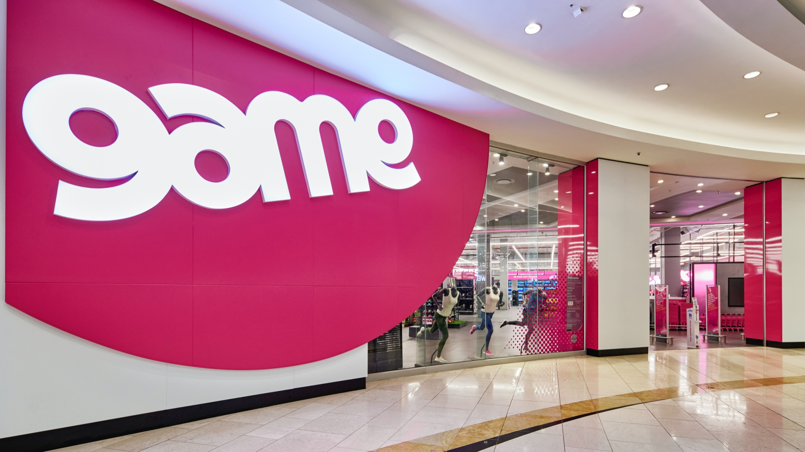
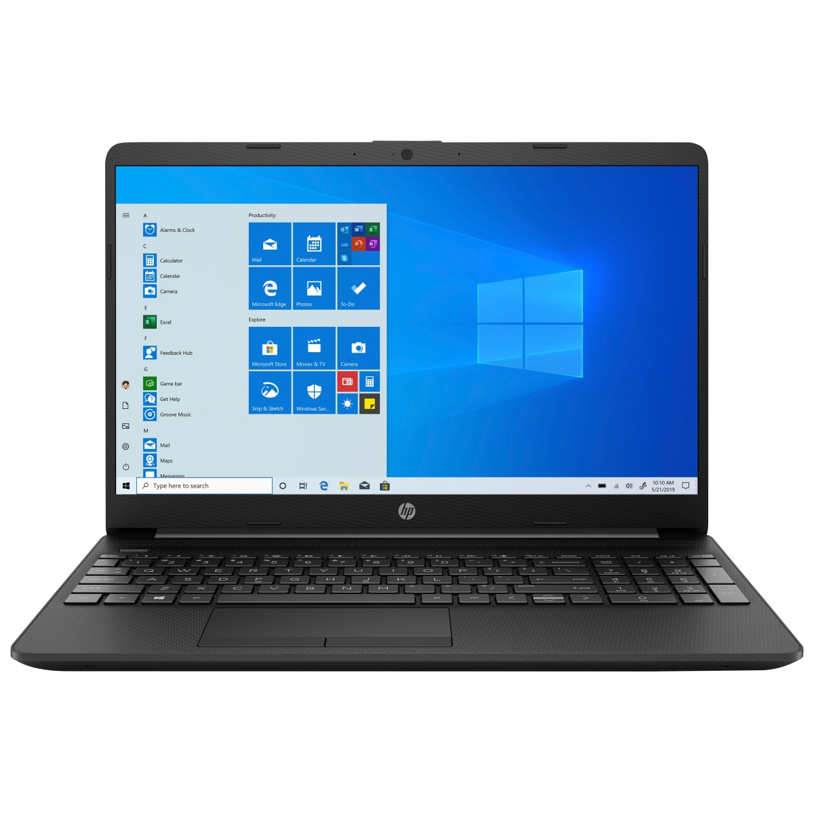
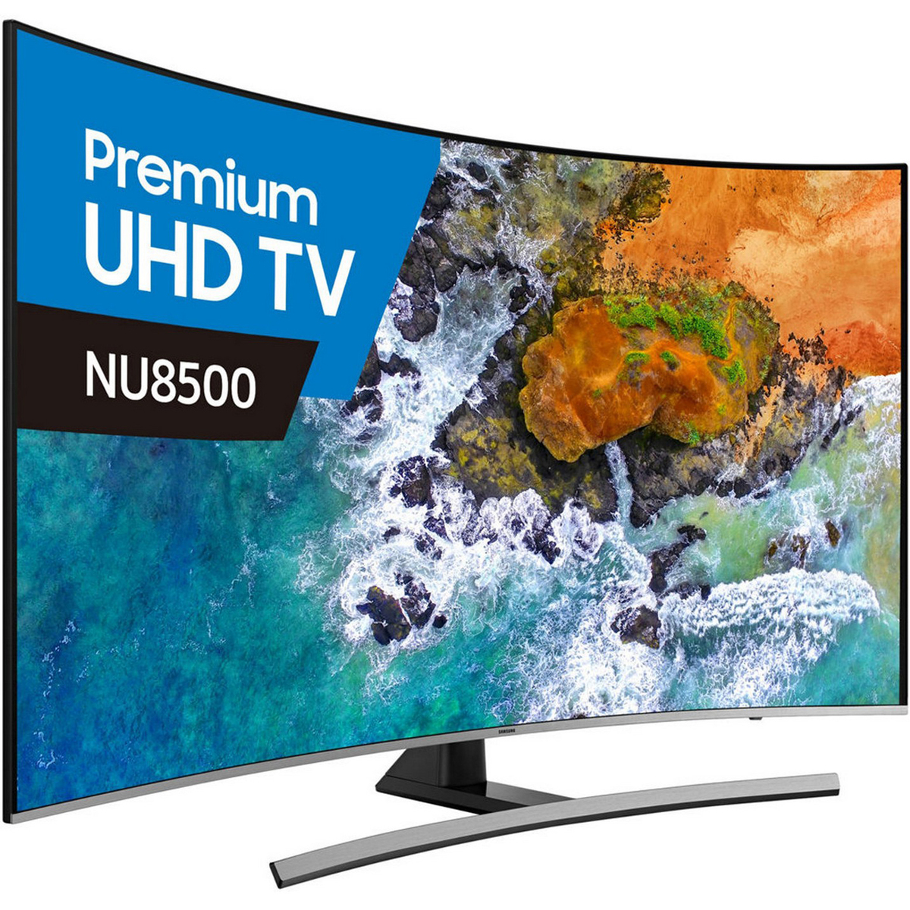
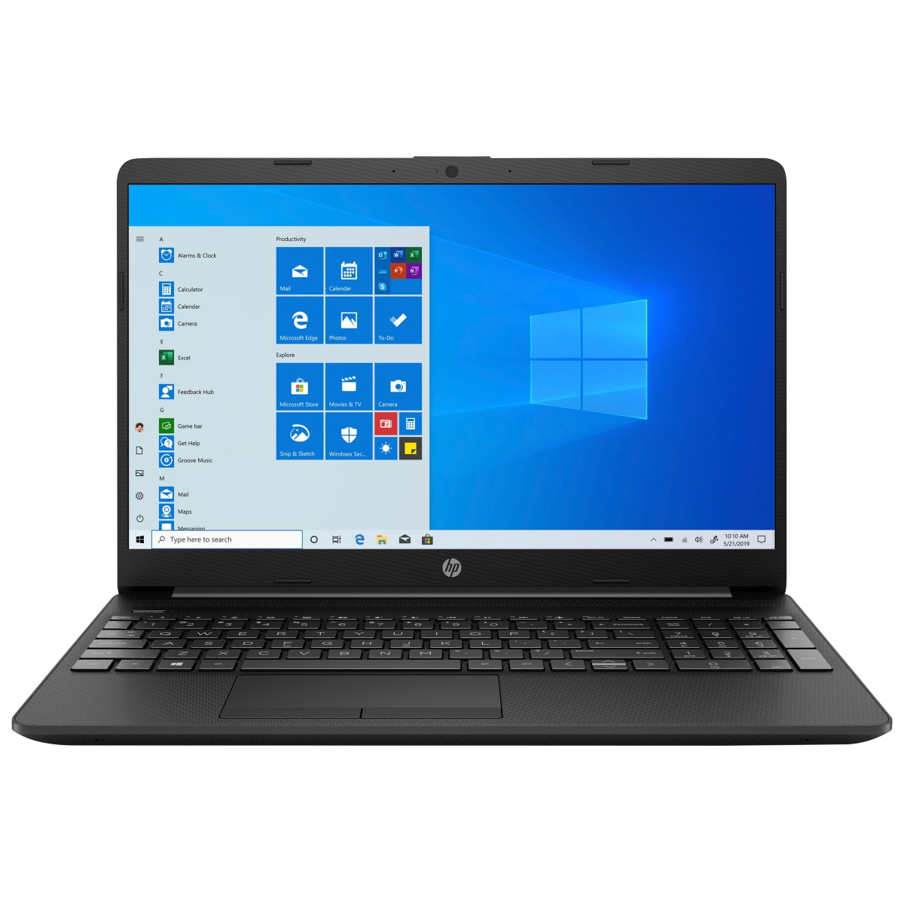
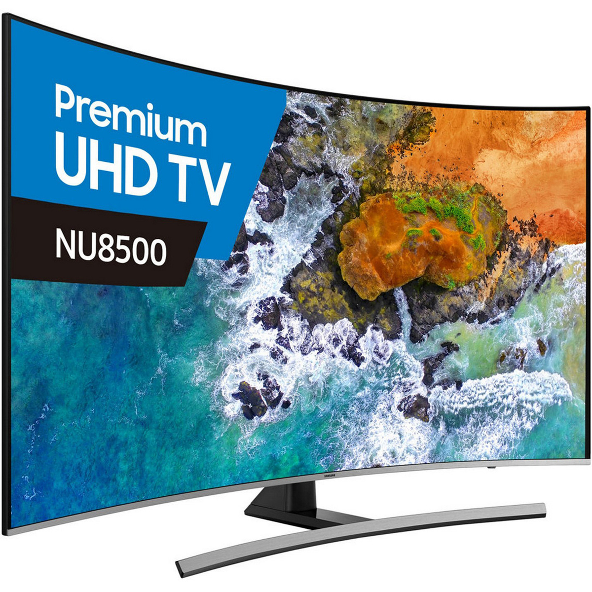
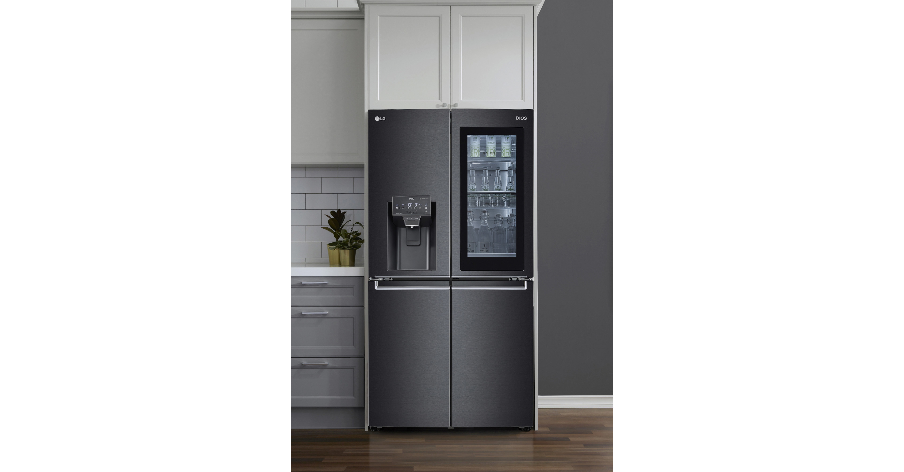
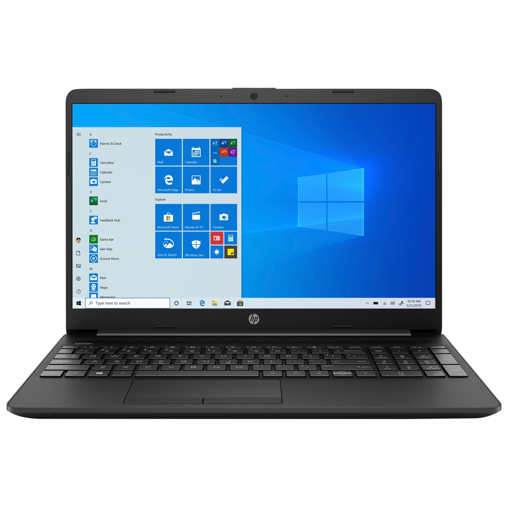
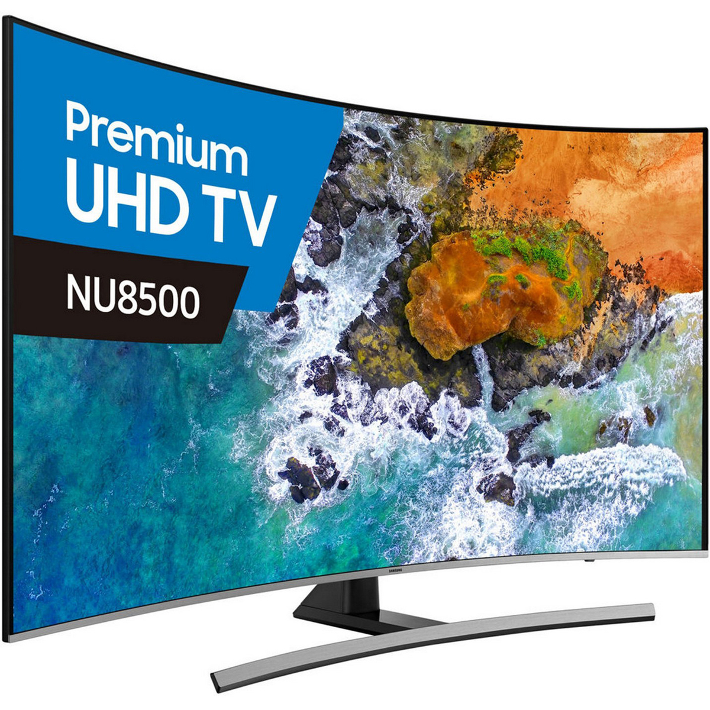

 



GAME
Massmart Holdings Limited (JSE: MSM) is a South African firm that owns local brands such as Game, Makro, Builder's Warehouse and CBW. It is the second-largest distributor of consumer goods in Africa, the largest retailer of general merchandise, liquor and home improvement equipment and wholesaler of basic foods.[4] As of 31 October 2019, Massmart operated 442 stores in South Africa and 12 other Sub-Saharan countries.[2] Its head offices are in the Massmart House in Sandton, Johannesburg.


